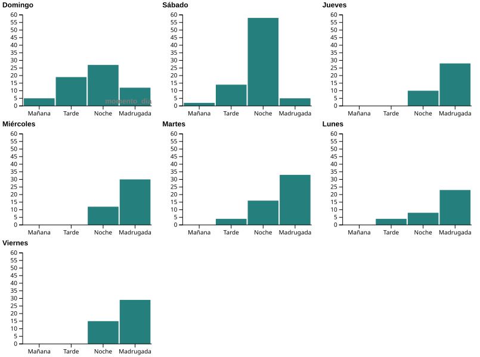

Análisis de Age of Empires II
Visualización de rendimiento, ELO, civilizaciones y actividad de juego.
En función del día, ¿Cuándo juego?

Evolución del ELO
Relación entre Civilizaciones
Porcentaje de Victorias por Civilización